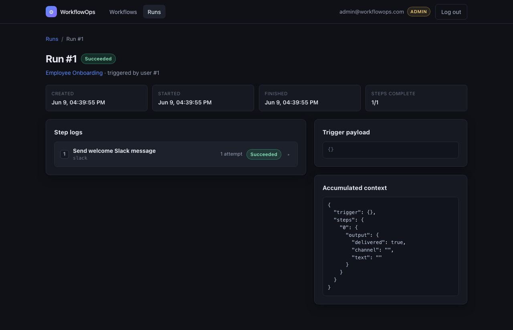

01
Full-stack · WorkflowOps
WorkflowOps
Build, run, and monitor business workflows.
A SaaS to create, run, and monitor business workflows — onboarding, approvals, and the like. Ordered steps with conditions invoke mock integrations through one swappable adapter; a background worker walks each run through a state machine with retries; the dashboard reflects the engine's authoritative state, live.
Architecture. Run/step state machine (pending → running → succeeded/failed) with bounded retries; Redis-backed workers; one Adapter protocol with swappable mocks; server-side RBAC (admin/editor/viewer), JWT role re-read from the DB each request.
workflowops.app / runs / live

FastAPIPostgresRedisReact / TS
94
Tests
22
RBAC proofs
0
Inj. surface
eval-free condition evaluator paired with parameterized SQL yields a zero-injection surface; the RBAC matrix is proven by 22 dedicated tests.